Drawing Our Map: Water and Roads
With the elevation in place, let’s organize our project so we can draw water (full hex major rivers and lakes, and hex side minor rivers and streams), roads (highways, primary roads, secondary roads, rail roads), built up areas (rural, industrial/commercial, high rise), forests (and vineyards/orchard) and fields.
Creating Layers for Our Manual Annotations
Please create the following layers, as explained below the table, and arrange them in this order in the “Manual Annotations” group:
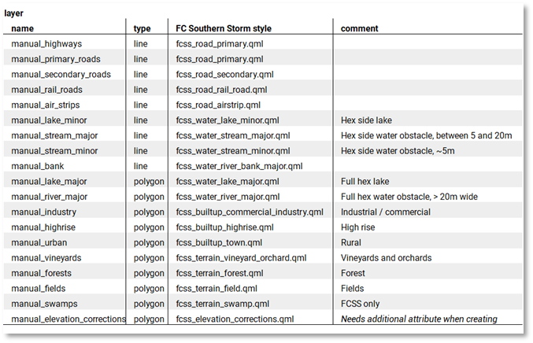
Table 1 Layers to add to QGis to capture our manual drawing
To create a line type layer, such as ‘manual_highways’, use the Layer menu, “Create Layer”, “New Shapefile layer”. In the “New Shapefile Layer”, choose “Line” for “Type”. Leave file encoding to “system”. Set CRS to Project CRS (your WGS UTM). Next, press the OK button.
When prompted to the “Save Layer as...” save the layer in our project folder using the layer’s name (‘manual_highways’).
Repeat this for all the line layers in the table.
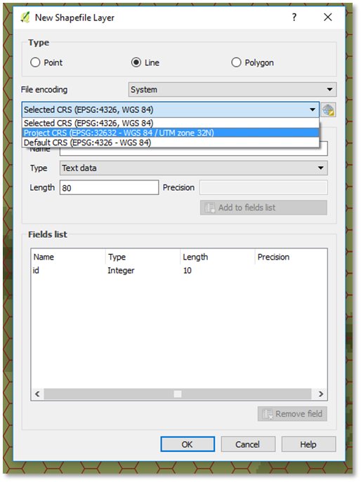
Figure 55 Creating a new "Line" ShapeFile layer
To create a polygon type layer, such as ‘manual_lake_major’, use the Layer menu, and create a “New Shapefile layer”, this time with “Polygon” for “Type”. Again, ensure the CRS is the Project CRS (WGS UTM). Press OK and save the layer.
The final polygon layer (manual_elevation_corrections) is special in that it needs an additional field (to capture the elevation). Fill the “New Field” name with “elevation”, type “Whole number”, and press “Add to fields list”. Next, press OK and save the layer.
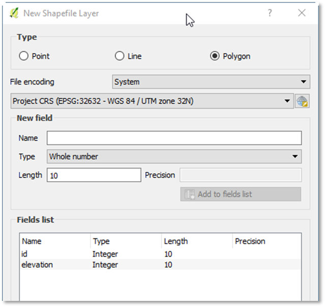
Figure 56 An additional "elevation" field defined for the manual_elevation_corrections_layer
Repeat this for all polygon layers in the table.
When all layers have been created, and arranged, the Layers Panel should look like this:
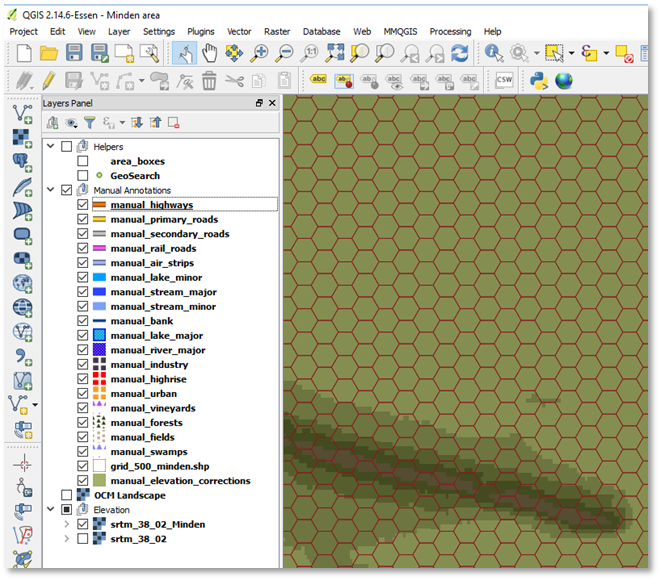
Figure 57 All line and polygon layers defined and ordered, in Flashpoint Campaign styles
Save the project.
Defining Short-Cuts for Quickly Selecting and Moving Features
For quick creation of water and urban hexes, I prefer to draw a hexagon shape slightly smaller than a hex, select it, copy it, and repeatedly paste and move it to cover a river / urban area.
QGis comes standard with keyboard short-cuts for copy and paste, but not for “Select Feature” and “Move Feature”. Use the “Settings” menu, Configure Shortcuts. In the dialog box, scroll to “Move Feature(s)”, press “Change”, and assign it with a key combination, for example, Ctrl+G.
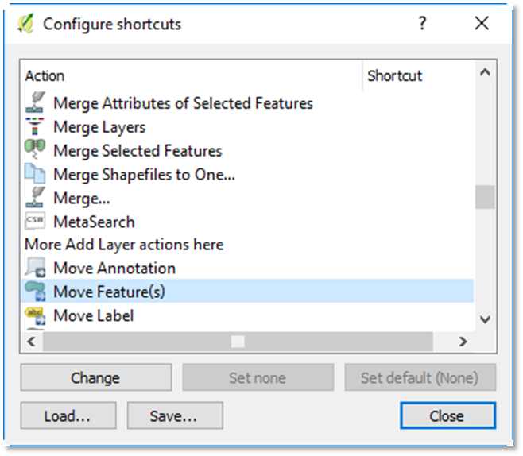
Figure 58 Assign a short-cut to Move Feature(s)
Next, scroll to “Select Feature(s)”, press “Change”, and assign it a key combination, for example, Ctrl+T.
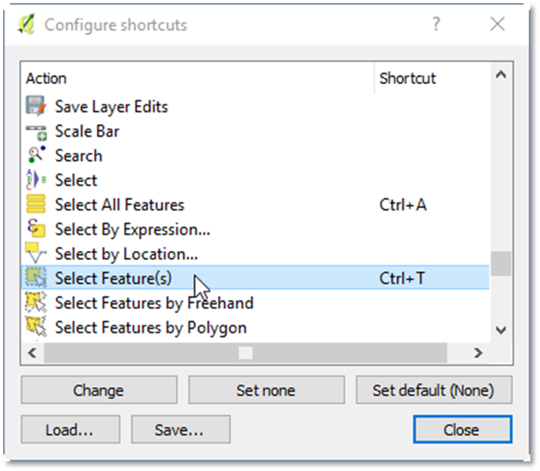
Figure 59 Assign a short-cut to Select Feature(s)
Adding a Satellite Layer to Drawn On
We will be drawing the “full hex” major rivers on top of a satellite imagery; satellite images will tell us both the location and the size (width) of the waterways.
In the Layers Panel, click (but don’t tick) the OCM Landscape layer, then use the Web menu, OpenLayers plug in, Bing Maps, Bing Aerial with Labels. Next, select the “area boxes” layer and tick it, so we see our map area’s boundaries.
Zoom the map in to scale 1:25,000, which is a good scale to draw our first polygon.
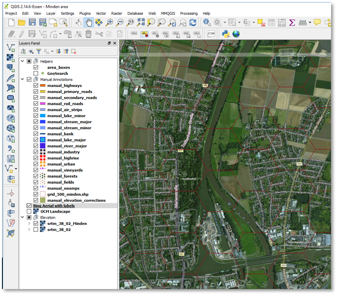
Figure 60 Finally time to draw our first polygon
Near Minden, the Weser River (running north-south) and also the Weser-Elbe canal (running east-west) are too wide (greater than 20m) for a hex side stream and need to be represented as a full hex. You can see this for yourself on the satellite image. All the other water obstacles are smaller and can be represented as a hex side water obstacle.
See Appendix D for guidelines on how to represent water obstacles.
Drawing Rivers, Highways, Primary Roads, and Air Strips
To draw our first river hex, select the manual_river_major layer. Next, toggle the layer to enable editing (right mouse button, Toggle Editing). Select the Edit menu, “Add Feature”. Draw a hex shape inside one the hexes through which the Weser River runs, keeping a good amount of margin between the hex shape and the hex grid. That margin makes it easier for us to position copies of the hex shape in other positions in the hex grid, without accidentally running over a hex grid boundary and “leaking” into an adjacent hex.
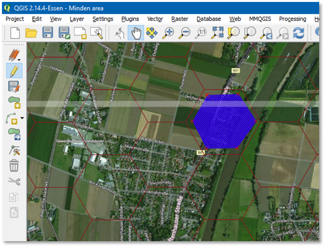
Figure 61 A first major river hex shape drawn on the major_river layer
With the hex shape available, we can change to a paste and move process. Select the shape (use your newly assigned keyboard short-cut, Ctrl+T). The selected shape is shown in solid yellow. Ctrl+C, Ctrl+V to copy and paste. Use new keyboard short-cut Ctrl+G to change to move mode and move the shape to the next river hex. Ctrl+V to paste a new shape and move it. Repeat until the whole Weser River and the Weser-Elbe / Mittelandkanal are covered.
Approximately 100 new hex shapes later, the Weser and the Kanal are covered, but not without running into the occasional dilemma of where to place the hex shape, trying to balance representing the flow the river / canal, not covering key roads, and not covering key hills. Don’t deliberate too long; QGis makes it relatively easy to revisit your current decision later, when you have more information (about the position of roads, etc.).
Do make sure you place hex shapes also just outside the borders of the area box, to cover the (half) hexes on the border of our game map.
Save your layer edits using the Layers menu, Current Edits, Save for Selected Layer(s).
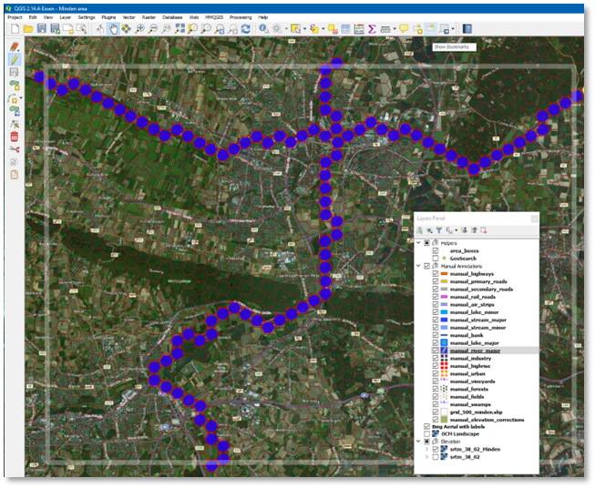
Figure 62 The Minden area with the Weser river and Mittellandkanal defined
Next, we draw the highways (Autobahn A2 (E30), and Autobahn A30 (E34)). Select the manual_highways layer, toggle the editing to on. Roads are drawn as polylines. For the Flashpoint Map Values Scanner to reliably detect roads and not get confused, run the roads from hex center to hex center, crossing near the middle of the hex side.
Start by Edit menu, “Add Feature”, click a series of points, and end by using the right mouse button, OK; there is no need to enter an “id”. When drawing, the Backspace key allows you to undo the last point drawn. While drawing, you can switch to the Pan Map mode (in the View menu), pan the map left or right, then press right mouse button and continue with drawing a road.
Note
If you have a Wacom Tablet and Pen (“digitizer”),QGis has excellent support for it. Using a pen works great for me, and feels faster than using a mouse for drawing lines and polygons.
Keep in mind that the A30 highway is incomplete here, transitioning to a Bundesstrasse B61 major road for several kilometers. (This was the case already in 1989).
Don’t forget to save your layer edits.
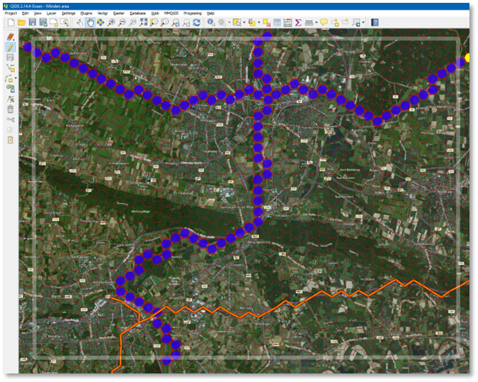
Figure 63 Minden, with the A2 highway and the tail of the A30 highway added
Adding the major roads (B61, B514, B482, B65) is similar, using the manual_primary_roads layer. Using the Bing Road layer (instead of the Bing Aerial with Roads layer) might make it easier to see the major roads. Use the “Web” menu, OpenLayers plug-in, Bing, Bing Roads to add the layer.
Some creativity will be required to run road B61 west of the Weser through the Porta Westfalica gap, since the real road position is covered by the river hexes.
Also add the airfield (Flugplatz Porta Westfalica, former British occupation forces airstrip) in layer manual_air_strips.
And save your edits.
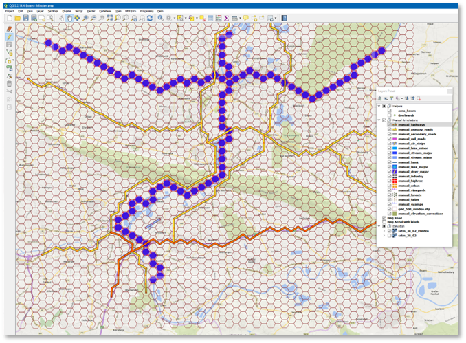
Figure 64 Minden with primary roads and air strips added, using Bing Roads as backdrop
Intermezzo: OTS Render
If we were hide the Bing layers, change coordinate system back to WGS 84 UTM, export the bitmap, parse the bitmap anew and save it as an .fp10 map file, and send the results to OTS’s secret lab, they might return an intermediate result as shown below. We’re doing great!
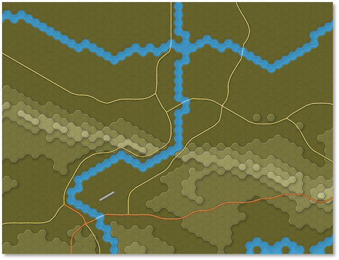
Figure 65 Our works-in-progress Minden rendered at OTS HQ